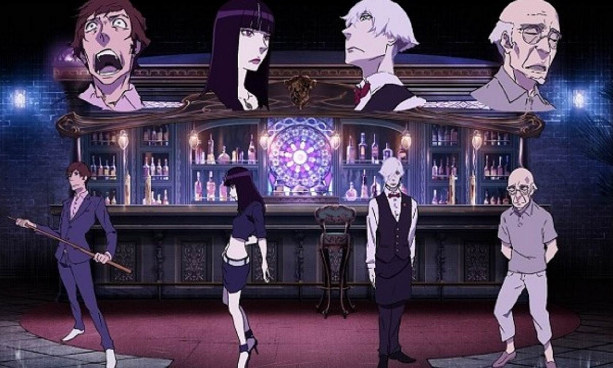
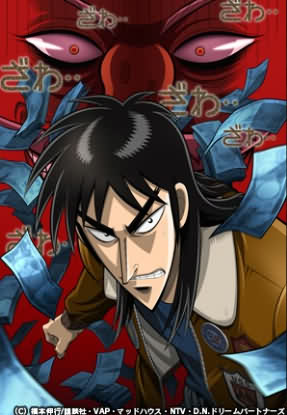
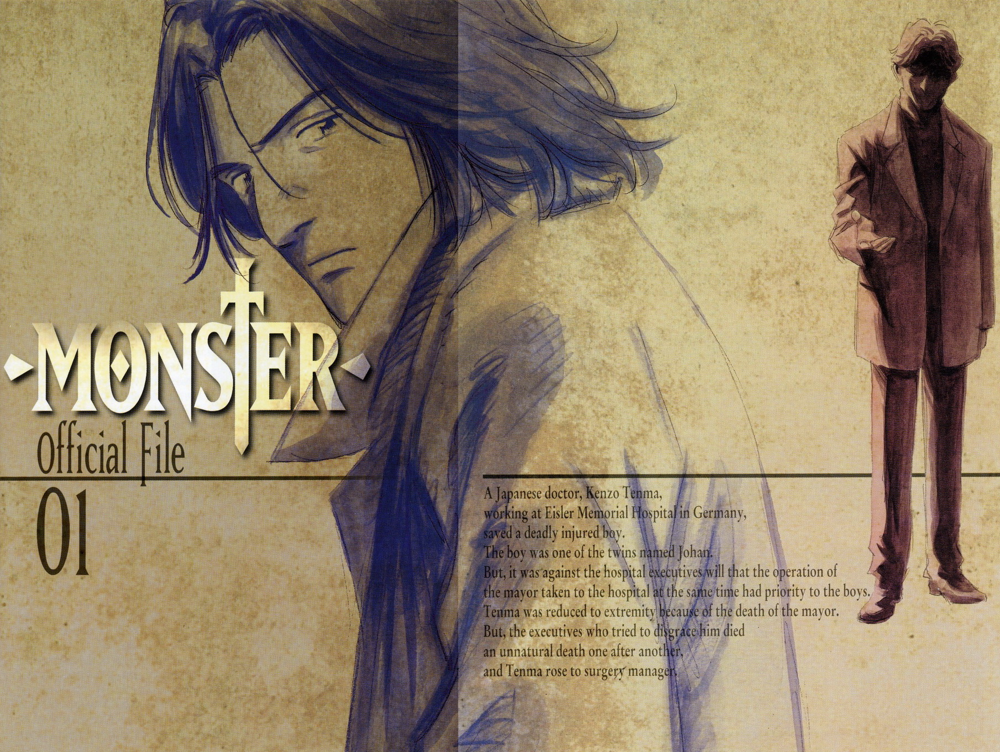
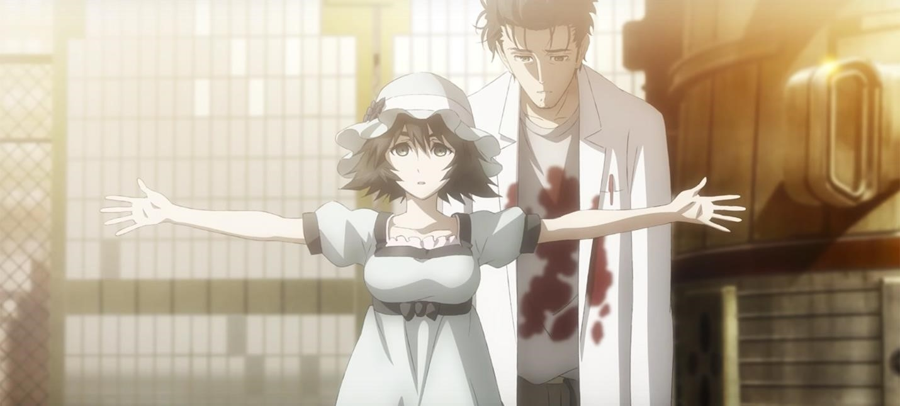

5: Mirai Nikki

Ratings : 🌟 7.6
English Name : The Future Diary
Genre :ActionMysteryPsychologicalThrillerSupernaturalShounen
Seasons : 1
Episodes : 26
Air-Date : 9-October-2011
Watch-Time : 24 min.(Per Ep.)
Synopsis:
Lonely high school student, Yukiteru Amano, spends his days writing a diary on his cellphone, while conversing with his two seemingly imaginary friends Deus Ex Machina, who is the god of time and space, and Murmur, the god's servant. Revealing himself to be an actual entity, Deus grants Yukiteru a "Random Diary," which shows highly descriptive entries based on the future and forces him into a bloody battle royale with 11 other holders of similarly powerful future diaries.
With the last person standing designated as the new god of time and space, Yukiteru must find and kill the other 11 in order to survive. He reluctantly teams up with his obsessive stalker Yuno Gasai (who also possesses such a diary), and she takes it upon herself to ensure his safety. But there's more to the girl than meets the eye, as she might have other plans for her unrequited love...
4: Death Parade
Ratings : 🌟 8.2
English Name : Death Parade
Genre : GameMysteryThrillerDramaPsychological
Seasons : 1
Episodes : 12
Air-Date : 10-January-2015
Watch-Time : 24 min.(Per Ep.)
Synopsis:
After death, there is no heaven or hell, only a bar that stands between reincarnation and oblivion. There the attendant will, one after another, challenge pairs of the recently deceased to a random game in which their fate of either ascending into reincarnation or falling into the void will be wagered. Whether it's bowling, darts, air hockey, or anything in between, each person's true nature will be revealed in a ghastly parade of death and memories, dancing to the whims of the bar's master. Welcome to Quindecim, where Decim, arbiter of the afterlife, awaits!
Death Parade expands upon the original one-shot intended to train young animators. It follows yet more people receiving judgment—until a strange, black-haired guest causes Decim to begin questioning his own rulings.
3: Gyakkyou Burai Kaiji: Ultimate Survivor
Ratings : 🌟 8.3
English Name : Kaiji: Ultimate Survivor
Genre : GamePsychologicalThrillerSeinen
Seasons : 2
Episodes : 26(Per Season)
Air-Date : 3-October-2007
Watch-Time : 24 min.(Per Ep.)
Synopsis:
Kaiji Itou is a good-for-nothing loiterer who spends his days drinking beer and stealing hubcaps—that is, until he ends up being tricked by his former co-worker. Unable to suddenly repay his friend's huge debt all by himself, Kaiji is offered a shady deal to participate in an illegal underground gamble on a cruise ship. This turns out to be nothing more than the beginning of his new life of hell—thrown headlong into a life-threatening roller coaster of mind games, cheating, and deceit.
Based on the first entry of the famous gambling manga series by Nobuyuki Fukumoto, Gyakkyou Burai Kaiji: Ultimate Survivor follows our unlucky protagonist as he is forced to fight not only other people, but also the mysteries of their psyches. Kaiji finds out the hard way that the worst sides of human nature surface when people's backs are against the wall, and that the most fearsome dangers of all are greed, paranoia, and the human survival instinct itself.
2: Monster
Ratings : 🌟 8.7
English Name : Monster
Genre : DramaHorrorMysteryPoliceThrillerSeinen
Seasons : 1
Episodes : 74
Air-Date : 7-April-2004
Watch-Time : 24 min.(Per Ep.)
Synopsis:
Dr. Kenzou Tenma, an elite neurosurgeon recently engaged to his hospital director's daughter, is well on his way to ascending the hospital hierarchy. That is until one night, a seemingly small event changes Dr. Tenma's life forever. While preparing to perform surgery on someone, he gets a call from the hospital director telling him to switch patients and instead perform life-saving brain surgery on a famous performer. His fellow doctors, fiancée, and the hospital director applaud his accomplishment; but because of the switch, a poor immigrant worker is dead, causing Dr. Tenma to have a crisis of conscience.
So when a similar situation arises, Dr. Tenma stands his ground and chooses to perform surgery on the young boy Johan Liebert instead of the town's mayor. Unfortunately, this choice leads to serious ramifications for Dr. Tenma—losing his social standing being one of them. However, with the mysterious death of the director and two other doctors, Dr. Tenma's position is restored. With no evidence to convict him, he is released and goes on to attain the position of hospital director.
Nine years later when Dr. Tenma saves the life of a criminal, his past comes back to haunt him—once again, he comes face to face with the monster he operated on. He must now embark on a quest of pursuit to make amends for the havoc spread by the one he saved.
1: Steins;Gate
Ratings : 🌟 9.1
English Name : Steins;Gate
Genre : ThrillerSci-Fi
Seasons : 2
Episodes : 24(Per Season)
Air-Date : 6-April-2011
Watch-Time : 24 min.(Per Ep.)
Synopsis:
The self-proclaimed mad scientist Rintarou Okabe rents out a room in a rickety old building in Akihabara, where he indulges himself in his hobby of inventing prospective "future gadgets" with fellow lab members: Mayuri Shiina, his air-headed childhood friend, and Hashida Itaru, a perverted hacker nicknamed "Daru." The three pass the time by tinkering with their most promising contraption yet, a machine dubbed the "Phone Microwave," which performs the strange function of morphing bananas into piles of green gel.
Though miraculous in itself, the phenomenon doesn't provide anything concrete in Okabe's search for a scientific breakthrough; that is, until the lab members are spurred into action by a string of mysterious happenings before stumbling upon an unexpected success—the Phone Microwave can send emails to the past, altering the flow of history.
Adapted from the critically acclaimed visual novel by 5pb. and Nitroplus, Steins;Gate takes Okabe through the depths of scientific theory and practicality. Forced across the diverging threads of past and present, Okabe must shoulder the burdens that come with holding the key to the realm of time.